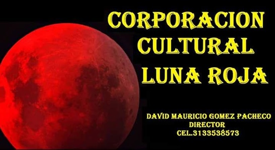

La CORPORACIÓN CULTURAL LUNA ROJA, anuncia el comienzo de su proceso de formación continuada en danza Folclórica Nacional y Joropo Tradicional, para los Grupos Juvenil, Adultos y Profesional, a partir de mañana jueves 1 de febrero, de 7 a 9 PM, en sus nuevas Instalaciones de la Carrera 18 No. 8-38 del Barrio el Retorno- Acacías. El Grupo de Danza Luna Roja, goza de un alto prestigio a Nivel Local, Departamental y Nacional que le ha permitido obtener múltiples reconocimientos por la calidad interpretativa de su puesta en escena. La Escuela de danza bajo la dirección artística del maestro David Mauricio Gómez Pacheco, brinda a sus estudiantes un proceso integral como bailarines, para que reconozcan sus aptitudes y nuestras tradiciones y sean capaces de determinar el cuándo, el cómo y el porqué de cada baile, de cada danza y de cada montaje coreográfico que interpretan. Para mayor información se pueden comunicar a los Celulares Nos.. 3133538573 y 3202326617
Atendiendo las múltiples solicitudes de los padres de familia para que les permitiéramos acceder a sus hijos menores de 4 años, a la Escuela de Formación en danza, la CORPORACIÓN CULTURAL LUNA ROJA, inicia sus CLASES DE MOVIMIENTO CREATIVO O “PRE-DANZA, DISEÑADO PARA NIÑOS Y NIÑAS DE ENTRE 2 Y 3 AÑOS, a partir de la primera semana de marzo de 2018. Estas clases permitirán explorar las formas orgánicas del movimiento, a través del juego y la improvisación, trabando la psicomotricidad y desarrollando habilidades y destrezas. Nuestro objetivo es que su niño (a) se divierta, se muevan al son de la música, y a la vez tenga la oportunidad de comenzar a interactuar con otros niños.